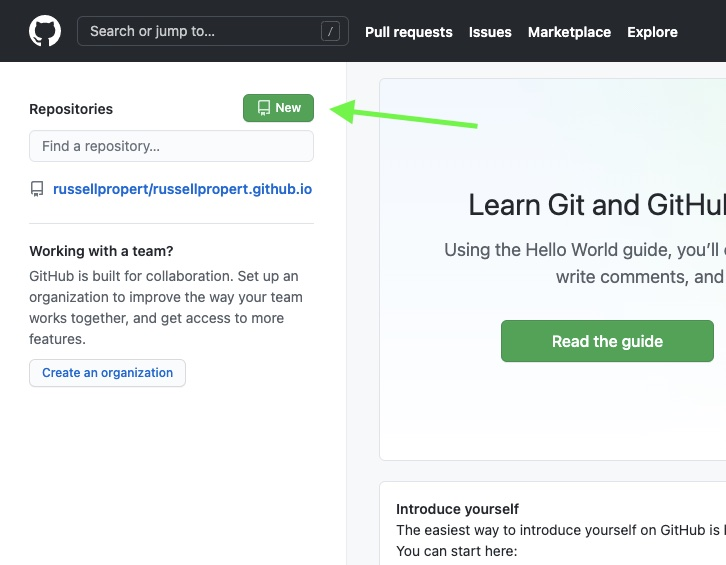
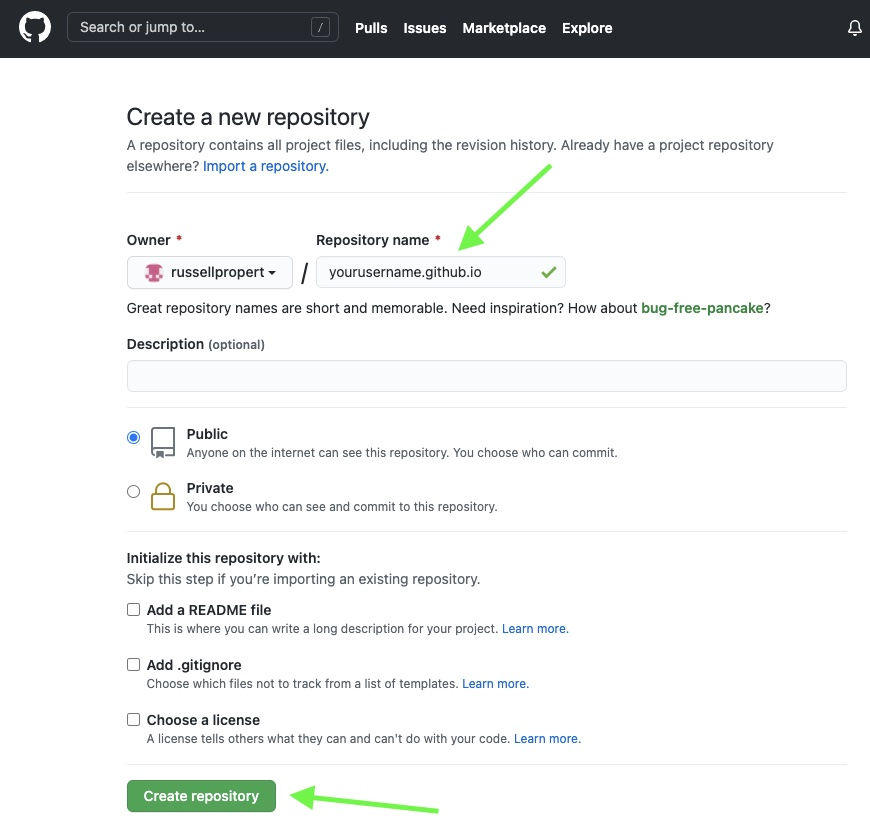
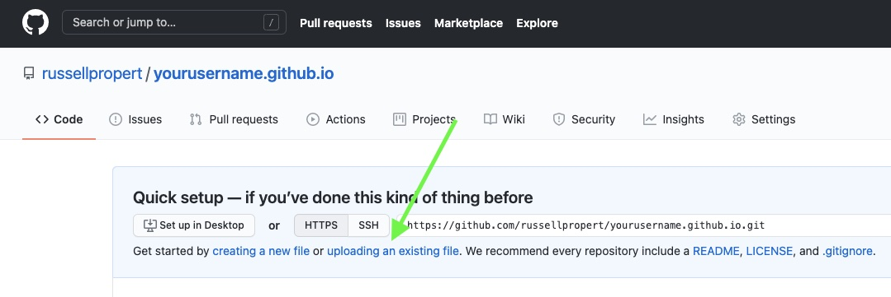
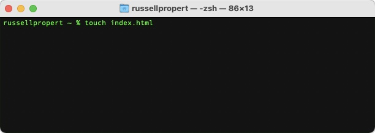
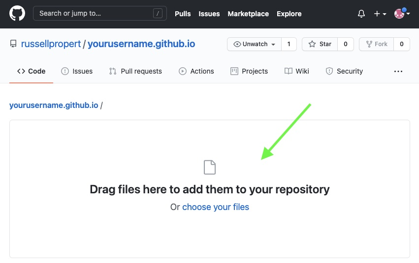
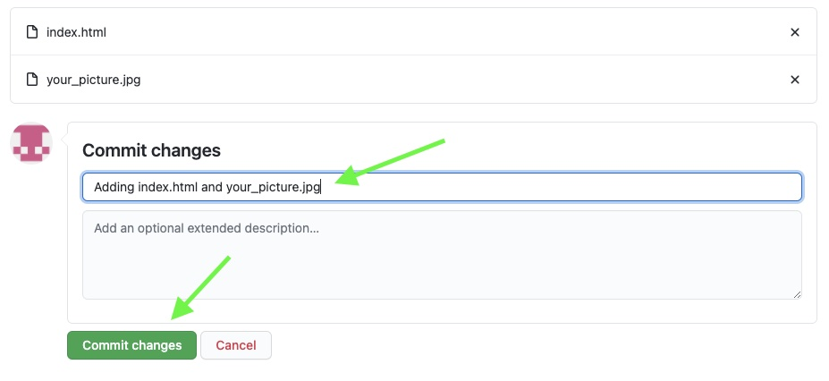

Creating a Web Page With GitHub
1. On your GitHub Home page, click on "New".

2. Name the repository by placing your GitHub username before “.github.io”.
3. Click “Create repository”.

4. Click on “uploading and existing file”. This will open the upload screen.

5. Open terminal and create an HTML file by typing “touch index.html”.

6. Open the HTML file in your code editor. Enter the following code. Enter your name
between the <h1> tags. The image src name following the ./ should
be the name of whatever image you choose. Save the file.
<html>
<h1>YourName’s Portfolio</h1>
<img src="./GitHub_Portfolio.jpg" />
</html>
7. Drag your index.html file and your image file into the upload screen in GitHub.

8. Add a message under the “Commit changes” title.
9. Click the “Commit changes” button.

10. Open a new tab in your browser and enter your repository name in the address bar.
|